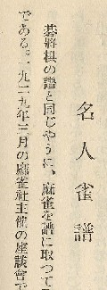
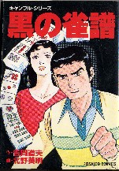

将棋や囲碁で、対局の手順を記した用紙を棋譜(きふ)という。「棋」は方形を表す音符「其」と、意符の「木」からできている。分かり易くいえば、「棋」は木製の駒というところ。
「譜」は、物事を順序にしたがって並べる意（“並べる”を表す「普」が音符で、「言」が意符）。そこで系譜とか楽譜、あるいは年譜という熟語がある。日本では、譜代大名（代々、主家に使えた大名）という表現が有名である。そこで木製の棋(駒)を使用するゲームの対局手順は棋譜ということになる。
将棋が棋譜なら囲碁は碁譜（ごふ）じゃないのか。実は中国では囲碁ではなくて囲棋(イーチー)と言う。囲（かこ）む棋の対局手順なので、こっちも棋譜。
ひょっとすると「碁」という字は、中国で囲棋の駒が石になってから出来た字かもしれない。もっとも中国語では、「棋」も「碁」も発音は「qi」、そこで囲碁と書いても、どのみち発音はイーチーとなる。
＃数年前、東京で行われた連珠高段者の講演で、「“碁”が日本で“ご”と発音されるようになったのは、昔の“「格五（五並べ）”の五から来ていると思われる」と聞いた。
で肝心の麻雀であるが、麻雀の対局記録は、“牌譜（ぱいふ）”とか“はいふ”と呼ばれる。どちらでも良いが、マージャンパイの流れで“ぱいふ”と呼ばれることの方が多いようだ。
しかし実はこの“牌譜”、中国ではまったく別な意味。中国で牌は、本来「文字を書いてある札」の意をあらわす。そこで家の表札とか名札、あるいは看板などのたぐいを言う。身近なところでは、「位牌」という表現がある。麻雀の字牌や万子だって、「文字が書いてある札」、そこで広い意味で「牌」と呼んでもおかしくはない。
しかし牌譜となると話が違ってくる。中国で牌譜と言えば、「系統的に文字が書かれている札」の意となる。そこで麻雀牌譜というと、麻雀の格言とか戦術、入門書の意味となる。じっさいに中国には「麻雀牌譜」という古書がある。
またこの祭都でも、箴言カテゴリーに「牌譜壱百」というコラムがある。これは中国の麻雀格言の中から百をセレクトしたものだ。
もちろん日本の先人は、中国で牌譜といえば格言などを意味していることは承知していた。そこで日本で最初に記録された対局手順は、「雀譜（じゃんぷ）」と表現されていた（参照・日本最古の雀譜）。

榛原茂樹「麻雀精通」（s5．7）
また戦前、雀鬼と謳われた沼崎雀歩（ぬまざきじゃんぽ）も、その麻雀論「理論的麻雀打法」(s6.3)で、雀譜と表現している。しかし戦前は記録をとること自体が少なかった。そこで雀譜という表現はとくに定着しなかった。
戦後も、雀譜という表現は使われていた。たとえば北野英明の麻雀コミック「黒の雀譜」

そしてσ(-_-)も、ココでは雀譜と書いている。(^-^； しかし近代麻雀やプロ麻雀など、専門誌上で牌譜と表現されたため、日本では牌譜がメジャーとなった。
しかし日本に正しく伝来した中国語でも、本来の意味と違う用法になってしまった例はいくらでもある。一番いい例が「公」。
国立大学が国による大学なら、公立大学は地方自治体による大学。いずれにしても民間の大学ではない。そこで民間による大学は私学という。
しかし中国では、公衆電話、公衆便所(-_-)という表現でも分かるように、「公」は民間とか大衆という意味。そこで中国で公立大学といえば、民間による大学ということになる（中国に公立大学という表現があるかどうかは知らない。たぶん無いだろな）。
むかし台湾へ云ったとき、公衆電話をかける必要ができた。電話ボックスのところに行くと、電話機の上に「公用電話」と書いてあった。一瞬、（お、役所専用の電話か？）と思ったが、もちろんこれは公衆電話の意味だ。(-_-；
また汽車（中国では自動車）、手紙（中国ではトイレットペーパー）のように、同じ漢字でも日本と中国ではまったく異なった意味を表す場合もある。ふんなわけで、牌譜が中国とは別の意味で使われているとしても、ま、いっかという感じ。
|